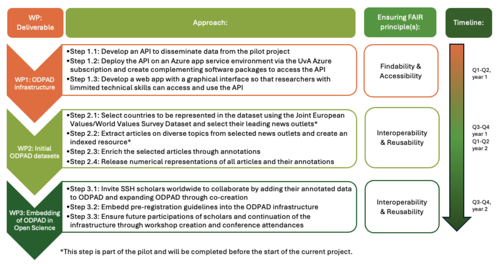

ODISSEI Conference 2024
Comparative Media Dataset from Web Crawl Data
Justin Chun-ting Ho, Marthe Möller,
Joanna Strycharz, Anne Kroon
Amsterdam School of Communication Research
Funded by ASCoR Mid-Size Collaborative Research Projects Grant

But...
- Rate limits after ONE request
- Did I mention it returns data in PDF?
Alternatives?
But...
- Very LIMITED data
- 20 out of 28 cases are from US/Europe
Problems
- Accessibility
- Reproducibility
- Representativeness
Solution?
But...
Curating the Comparative Media Dataset
- Top outlets in 16 countries (5 in Europe, 5 in Asia, 5 in Americas, and 1 in Africa)
- 600 annotators per country
- 6 concepts from most cited papers in communication science (including Topic, Sentiment, Frame)
But can I share it?
Workaround
- Took inspiration from Twitter datasets
- A Python package to download articles from CommonCrawl can construct the dataset locally
- More info:
github.com/Digicomlab/Comparative-Media-Dataset
One More Thing
Open Data Platform for Annotated Datasets (ODPAD)
Special Thanks
Qiru Huo
Dongdong Zhu